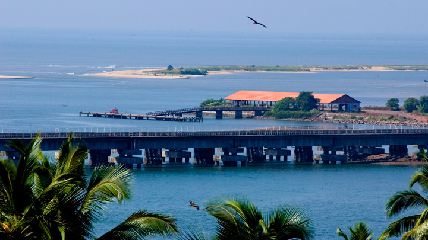

Bekal fort
Bekal fortChandragiri fort
Malik dheenar juma masjid
Kasaragod is a municipal town and the district headquarters of Kasaragod district of Kerala state in India. Situated in the rich biodiversity of Western Ghats, it is known for the Chandragiri and Bekal Forts, Chandragiri River, historic Kolathiri Rajas, natural environment of Ranipuram and Kottancheri Hills, historical and religious sites like the Madiyan Kulom temple, Madhur Temple, Ananthapuram Lake Temple and Malik Deenar Mosque. It is located 50 km south of the port city of Mangalore, 376 km west-southwest of Bengaluru and 578 km north of state capital Thiruvananthapuram
Kasaragod district is endowed with 9 rivers (out of a total of the 44 rivers that flow in Kerala), hills, beaches, backwaters, as well as temples, churches, mosques and forts. Bekal Fort - 15 km from Kasaragod Town. Chandragiri Fort located 8 km from town. Malik Deenar Mosque, a holy mosque situated at Thalangara near by the Kasaragod railway station. Ananthapura Lake Temple, an ancient temple dedicated to Lord Vishnu. Ranipuram - A Hill station of grassy hills near Panathady Town and linked to Kanhangad by Kanhangad-Panathur-Madikeri highway. Kottancheri Hills - Located near Malom, 45 km from Kanhangad Town. Mayipady Palace
Bekal fort